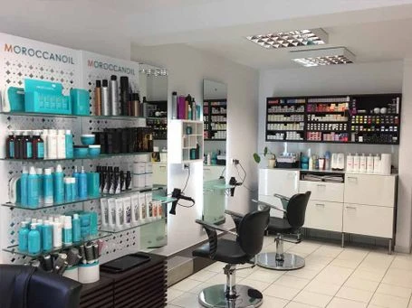
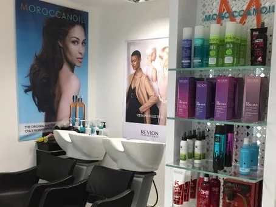

Der Salon
Zwei Bedienplätze, ein Waschbecken, ein türkises Regal, das man vom Gehsteig aus sieht. Kein großer Laden — aber einer, in dem eine Meisterin selbst am Stuhl steht.
Perlacher Straße 2 · München-Giesing

Bahar
Fakhria Tokhi — im Laden nennen sie alle Bahar — ist Friseurmeisterin und arbeitet seit zwanzig Jahren in München. Der Salon in der Perlacher Straße gehört ihr. Kein Filialleiter, keine Kette, keine wechselnden Aushilfen: Wer hier einen Termin bekommt, weiß auch, wer ihn macht.
Was Kundinnen laut der bisherigen Seite besonders schätzen, ist die ausführliche Beratung. Vor jeder Farbe steht eine Kopfhautanalyse, vor jedem Schnitt ein Gespräch darüber, was zu Haarstruktur und Alltag passt, nicht darüber, was gerade auf Instagram läuft.
Der Name ist ein Wortspiel: aus Bahar und Haar wird BaHaar’s.
Zwanzig Jahre hinter dem Stuhl in München, der Meisterbrief von der Handwerkskammer für München und Oberbayern, und Augenbrauen in Fadentechnik — ohne Wachs, ohne Pinzette, und nicht in jedem Salon in Giesing zu bekommen.
Womit gearbeitet wird
Was im Regal steht und tatsächlich benutzt wird:
- Moroccanoil prägt das ganze Regal, und die Farbe dieser Seite
- Olaplex Aufbau nach Blondierung, 30 €
- Revlon Professional
- American Crew für die Herren
- CHI
Ammoniakfreie, allergiefreie Farbe gibt es für alle, die empfindlich reagieren — sie kostet 6 bis 10 € Aufpreis.
So sieht es aus
Ohne Beschönigung: ein heller, weiß gefliester Laden mit zwei Bedienplätzen. Die Aufnahmen stammen von der bisherigen Seite und sind klein. Neue Bilder sind das Erste, was diese Seite noch braucht.


BaHaar’s Kosmetikstudio
Direkt neben dem Salon ist ein Kosmetikstudio dazugekommen: Gesichtsbehandlung, Waxing, Maniküre, Pediküre, Make-up und Wimpern.
noch offen
Für das Kosmetikstudio stehen noch keine Preise fest. Wir schreiben hier lieber nichts hin, als eine Zahl zu erfinden, die an der Kasse nicht gilt. Rufen Sie an — am Telefon wird Ihnen gesagt, was eine Behandlung kostet.
Perlacher Straße 2
- Öffnungszeiten
-
- Montag 10:00 – 16:00
- Dienstag bis Freitag 09:00 – 19:00
- Samstag 09:00 – 16:00
- Sonntag geschlossen
- Anschrift
-
BaHaar’s Styling Studio
Perlacher Straße 2
81539 München-Giesing